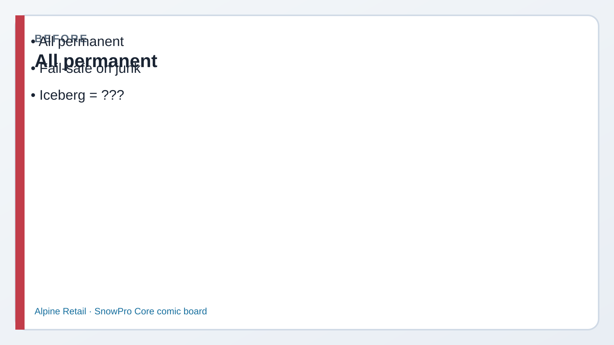
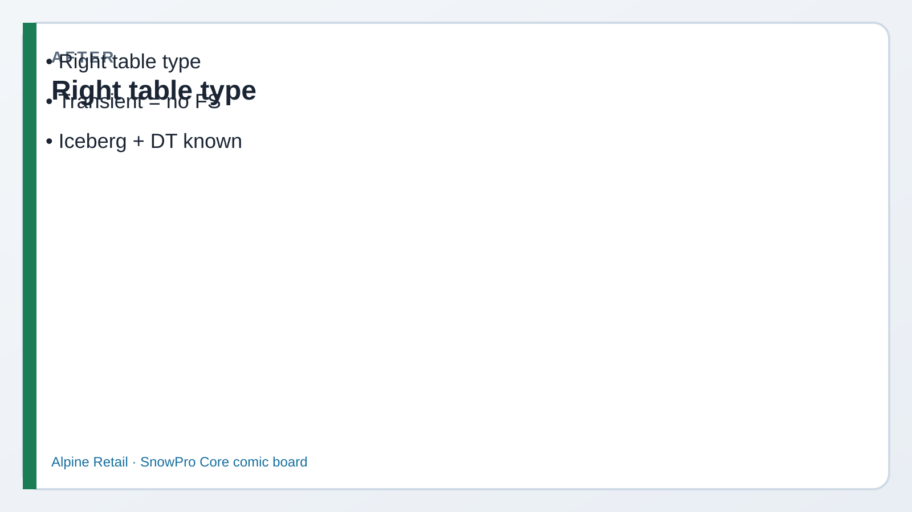

Read every Teach first section before you copy SQL.
“Table” is not one product. Fail-safe, session scope, files-on-stage, open formats, and auto-refresh pipelines
are different object flavors — COF-C03 expects you to pick the right one.
1
Picture first. Look at BEFORE/AFTER → read the comic → then run tiny SQL.
If a paragraph feels heavy, skip to the next comic strip — Dev explains it out loud for you.
Business problem
Morgan wants cheaper scratch tables for overnight file loads. Sam refuses to drop Fail-safe on loyalty data we must keep.
A supplier also drops Iceberg files, and Kai wants a sales summary that refreshes itself.
Solution you will build
Create permanent / transient / temporary demos, explain external + Iceberg (commented if trial blocks),
and stage a Dynamic Table pattern with a simple source table.

Before Everything permanent.

After Right table type — transient has no Fail-safe.
Episode 04 · Start here
Morgan wants cheap. Sam wants Fail-safe.
MorganManager — cost
ETL staging tables don’t need a seven-day Snowflake parachute. Stop paying for Fail-safe on junk.
SamCompliance
Loyalty tables do. Permanent for data we must protect. Transient for throwaway loads. Don’t mix them up on the store platform.
Dev: Temporary = this session only. When you disconnect, it’s gone.
See it — which table for which job
Default
Permanent
Time Travel + Fail-safe. Production tables you must recover.
LAB.T_PERM Fail-safe: yes
Cheaper
Transient
Time Travel yes (short). No Fail-safe. Good for ETL staging.
LAB.T_TRANS Fail-safe: no
Session
Temporary
Visible only in your session / until it ends. No Fail-safe.
LAB.T_TEMP gone after logout
Files
External table
Metadata over files on a stage — read-oriented, not a normal mutable warehouse table.
Query @stage files without full COPY first
C03
Iceberg table
Open table format; data can live in customer storage with Snowflake catalog options.
If I run SHOW TABLES, will I see my temporary table tomorrow?
DevCoach
Only while this session lives. Close the worksheet session / disconnect — temporary is gone. Permanent and transient stay.
1 Permanent + transient + temporary
What this does: Creates three tiny tables so you can contrast scope and Fail-safe.
SQL · three kinds
USE ROLE ROLE_CORE_LAB_ADMIN;
USE WAREHOUSE WH_CORE_XS;
USE DATABASE DMART;
USE SCHEMA LAB;
CREATE OR REPLACE TABLE LAB.T_PERM (
ID NUMBER, LABEL STRING
);
CREATE OR REPLACE TRANSIENT TABLE LAB.T_TRANS (
ID NUMBER, LABEL STRING
);
CREATE OR REPLACE TEMPORARY TABLE LAB.T_TEMP (
ID NUMBER, LABEL STRING
);
SQL · insert + union
INSERT INTO LAB.T_PERM VALUES (1, 'permanent');
INSERT INTO LAB.T_TRANS VALUES (1, 'transient');
INSERT INTO LAB.T_TEMP VALUES (1, 'temporary');
SELECT 'PERM' AS kind, * FROM LAB.T_PERM
UNION ALL SELECT 'TRANS', * FROM LAB.T_TRANS
UNION ALL SELECT 'TEMP', * FROM LAB.T_TEMP;
✓ Three rows — note TEMPORARY kind on SHOW TABLES
Before Step 2
Riley: “External is read-oriented.”
RileyEngineer
External tables point at files. Don’t treat them like an OLTP table you UPDATE all day.
DevCoach
An external table reads files through metadata. If we update rows all day, load them into a real table first.
2 External + Iceberg (pattern / comments)
What this does: Shows the CREATE shapes. Leave commented until stage/volume exists — still memorize for C03.
SQL · external (commented)
-- Needs files on @LAB.STG_INBOUND first:
-- CREATE OR REPLACE EXTERNAL TABLE LAB.EXT_ORDERS (
-- ORDER_ID NUMBER AS (VALUE:c1::NUMBER),
-- AMOUNT NUMBER AS (VALUE:c2::NUMBER)
-- )
-- LOCATION = @LAB.STG_INBOUND/orders/
-- FILE_FORMAT = (TYPE = CSV SKIP_HEADER = 1)
-- AUTO_REFRESH = FALSE;
✓ You can explain why Iceberg is on C03 even if CREATE fails on trial
Before Step 3
Dynamic Tables = declare the end state
KaiAnalyst
Is a Dynamic Table the same as a Task + Stream pipeline?
DevCoach
Related job, different UX. DT: you write the SELECT + lag; Snowflake refreshes. Streams/Tasks: you orchestrate steps yourself.
3 Dynamic Table intro
What this does: Creates a source table. Try CREATE DYNAMIC TABLE; if the trial blocks it, keep the commented pattern anyway.
SQL · DT source
CREATE OR REPLACE TABLE LAB.DT_SOURCE (
EVENT_ID NUMBER,
EVENT_TS TIMESTAMP_NTZ,
PAYLOAD STRING
);
INSERT INTO LAB.DT_SOURCE VALUES
(1, CURRENT_TIMESTAMP(), 'click'),
(2, CURRENT_TIMESTAMP(), 'purchase');
SELECT * FROM LAB.DT_SOURCE;
SQL · dynamic table (may fail on trial)
-- CREATE OR REPLACE DYNAMIC TABLE LAB.DT_EVENTS
-- TARGET_LAG = '1 minute'
-- WAREHOUSE = WH_CORE_XS
-- AS
-- SELECT EVENT_ID, EVENT_TS, PAYLOAD
-- FROM LAB.DT_SOURCE;
✓ Source rows visible; know TARGET_LAG + WH even if DT create is skipped
Exam presses further — say these out loud
Q1. Which table types have Fail-safe?
Say: Permanent tables have Fail-safe (after Time Travel). Transient and temporary do not. Classic distractor: “transient has Fail-safe.”
Q2. What’s the scope of a temporary table?
Say: Current session. When the session ends, the temporary table is gone. Other users / later sessions won’t see it.
Q3. Why are external tables described as read-oriented?
Say: They query files via metadata on a stage. They’re for reading staged data in place — not a full substitute for mutable permanent tables you load into.
Q4. Why is Iceberg on COF-C03?
Say: Snowflake supports Iceberg tables for open-format / external-volume scenarios. Exam expects awareness: catalog, external volume, interoperability — even if your trial never creates one.
Q5. Dynamic Table vs Task — pick one sentence?
Say: Dynamic Table declares the desired result and lag; Snowflake manages refresh. A Task runs scheduled SQL you control (often with streams). Different control surfaces, overlapping pipeline goals.
Priya’s wrap-up (say this out loud)
“Permanent tables get Time Travel and Fail-safe. Transient and temporary skip Fail-safe — temp dies with the session.
External tables read stage files; Iceberg brings open table format (needs volume/catalog). Dynamic Tables declare SELECT + lag for incremental refresh.
I pick the type for cost and recovery — not habit.”
Next
Lab 05 — interfaces, Snowpark, Cortex, Streamlit, Notebooks.